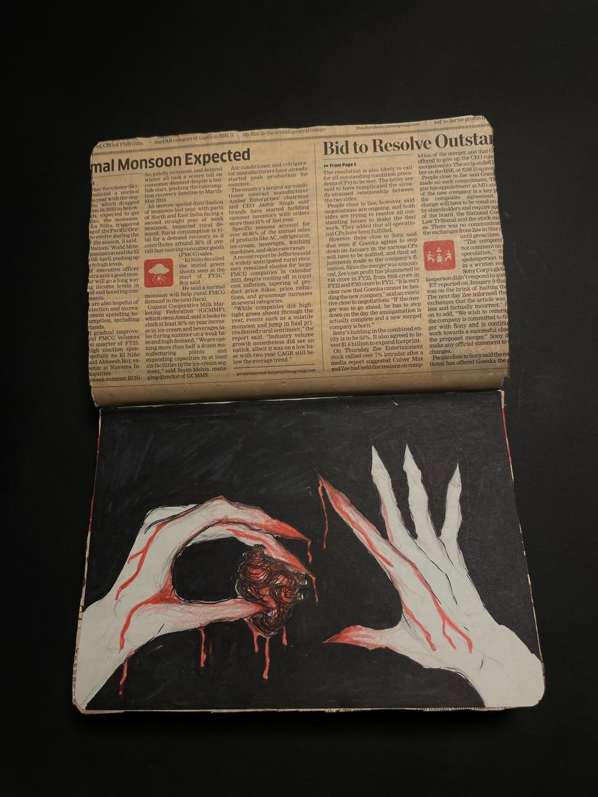

This artwork portrays the idea of emotional vulnerability through two pale hands exchanging a bleeding heart. The dark background and red accents highlight themes of pain, sacrifice, and raw emotion, while the newspaper above contrasts private feelings with the external world.
